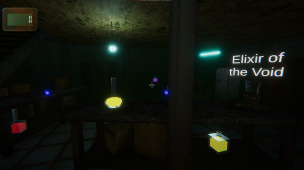
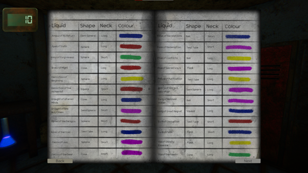
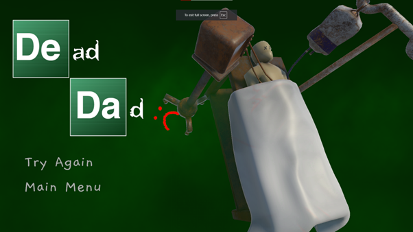
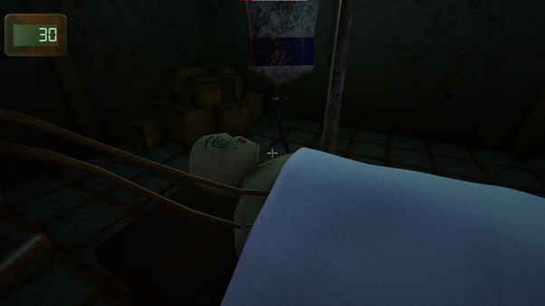

Back
Waking Dad - Game Jam Project
Made in Unity Engine, Waking Dad is a fast-paced action game where you must save your father from a coma in under 60 seconds by crafting a life-saving potion in his basement lab.
As the Design Lead, I designed the levels, balanced the gameplay mechanics, and ensured the chaotic yet intuitive experience inspired by Breaking Bad.
The game was developed during a game jam, pushing our team to create a polished prototype under tight constraints using C# and Unity’s particle systems for visual effects.



